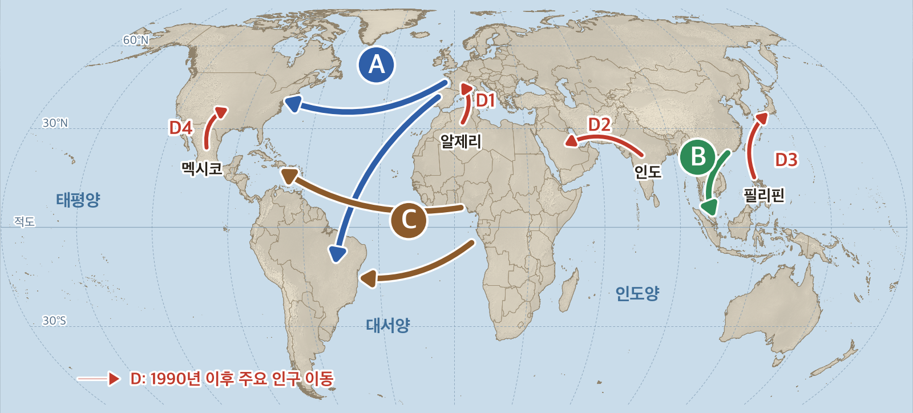

사회② 7-3 유형별 확인 문제
반·번호와 반 암호를 넣으면 나에게 맞춘 문제만 나와요.
다음 자료에서 (가), (나)에 해당하는 요인을 바르게 짝지은 것은?
필리핀의 간호사 ○○ 씨는 이렇게 말하였다. "(가) 고향에서는 일자리를 구하기 어렵고 월급도 적어요. (나) 일본 병원은 간호사를 많이 뽑고 월급도 훨씬 많아요."
| (가) | (나) | |
|---|---|---|
| ① | 배출 요인 | 흡인 요인 |
| ② | 흡인 요인 | 배출 요인 |
| ③ | 흡인 요인 | 흡인 요인 |
| ④ | 배출 요인 | 배출 요인 |
| ⑤ | 정치적 요인 | 경제적 요인 |
얼마나 확실해?
지도의 A~C 이동에 대한 설명으로 옳은 것만을 <보기>에서 있는 대로 고른 것은?

<보기>
ㄱ. A는 유럽 사람들이 식민지를 개척하려고 신대륙으로 이동한 것이다.
ㄴ. B는 중국 사람들이 19세기 이후 일자리를 찾아 동남아시아로 이동한 것이다.
ㄷ. C는 아프리카 사람들이 일자리를 찾아 스스로 아메리카로 건너간 자발적 이동이다.
ㄹ. C는 노예 무역에 의해 강제로 이루어진 이동이다.
ㄱ. A는 유럽 사람들이 식민지를 개척하려고 신대륙으로 이동한 것이다.
ㄴ. B는 중국 사람들이 19세기 이후 일자리를 찾아 동남아시아로 이동한 것이다.
ㄷ. C는 아프리카 사람들이 일자리를 찾아 스스로 아메리카로 건너간 자발적 이동이다.
ㄹ. C는 노예 무역에 의해 강제로 이루어진 이동이다.
얼마나 확실해?
세계 인구 이동 지도의 D1~D4 이동에 공통으로 나타나는 요인으로 가장 적절한 것은?
얼마나 확실해?
다음은 학생이 인구 이동 사례의 요인을 정리한 표이다. 배출 요인과 흡인 요인을 바르게 정리하지 않은 것은?
| 이동 사례 | 배출 요인 | 흡인 요인 | |
|---|---|---|---|
| ① | 베트남 → 광주의 공장 | 베트남의 낮은 임금 | 광주 공장의 일자리 |
| ② | 곡성 → 광주(할머니) | 가까운 곳에 큰 병원이 없음 | 큰 병원이 가까움 |
| ③ | 광주 → 서울의 대학(언니) | 서울에 좋은 대학이 많음 | 광주에 원하는 학과가 없음 |
| ④ | 시리아 → 유럽 | 계속되는 내전 | 안전한 생활 |
| ⑤ | 투발루 → 오스트레일리아 | 바닷물이 차올라 살 땅이 줄어듦 | 안전하게 살 수 있는 땅 |
얼마나 확실해?
세계 인구 이동 지도의 D4처럼 멕시코에서 미국으로 이동하는 사람이 많다. 이 이동의 배출 요인과 흡인 요인을 한 가지씩 서술하시오.
<조건>
- 배출 요인은 «멕시코의 무엇», 흡인 요인은 «미국의 무엇»인지 드러나게 쓸 것.
- «경제적 요인»처럼 요인의 이름만 쓰지 말 것.
- 배출 요인은 «멕시코의 무엇», 흡인 요인은 «미국의 무엇»인지 드러나게 쓸 것.
- «경제적 요인»처럼 요인의 이름만 쓰지 말 것.
배출 요인:
흡인 요인:
다음 (가)~(라) 중 틀린 문장을 두 개 찾아 기호를 쓰고, 각각 바르게 고쳐 쓰시오.
(가) 흡인 요인은 사람을 다른 지역으로 밀어내는 요인이다.
(나) 전쟁이나 분쟁을 피해 나라를 떠나는 것은 정치적 요인에 의한 이동이다.
(다) 오늘날 세계의 인구 이동은 대부분 일자리를 찾는 경제적 이동이다.
(라) 아프리카 사람들은 일자리를 찾아 스스로 아메리카로 건너갔다.
(나) 전쟁이나 분쟁을 피해 나라를 떠나는 것은 정치적 요인에 의한 이동이다.
(다) 오늘날 세계의 인구 이동은 대부분 일자리를 찾는 경제적 이동이다.
(라) 아프리카 사람들은 일자리를 찾아 스스로 아메리카로 건너갔다.
<조건>에 맞게 한 문장으로 서술하시오.
<조건>
- «흡인 요인»과 «배출 요인»이라는 말을 모두 넣을 것.
- 광주에서 서울로 대학을 가는 사례를 쓸 것.
- «~다.»로 끝나는 완성된 문장으로 쓸 것.
- «흡인 요인»과 «배출 요인»이라는 말을 모두 넣을 것.
- 광주에서 서울로 대학을 가는 사례를 쓸 것.
- «~다.»로 끝나는 완성된 문장으로 쓸 것.
다음 표의 ㉠~㉢에 들어갈 말을 <낱말 상자>에서 골라 쓰시오.
| 음식 | 누가 어디에서 어디로 | 밀어낸 힘(배출 요인) | 끌어당긴 힘(흡인 요인) |
|---|---|---|---|
| 짜장면 | 중국 산둥 사람들이 ( ㉠ ) 항구로 | ( ㉡ ) | ( ㉢ ) |
<낱말 상자> 인천 · 부산 · 항구의 짐 나르는 일자리 · 고향의 가난과 일자리 부족 · 전쟁을 피함 · 따뜻한 날씨
㉠ ㉡ ㉢